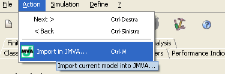
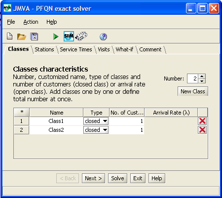

Import in JMVA
_________________
After creating a simulation model, you can export it to the analytic solver component of the JMT suite, namely JMVA. In the Action menu, click "Export to MVA".

If there are errors in the model, i.e., conditions not allowed in models with analytical solution, a dialog window with information about such errors appears. If you want to continue with the analytical solution, you must corret the errors.
When the model satisfies all the constraints for analytical solution, a JMVA window appears on the screen and the model can be solved with JMVA.

Refer to JMVA user's guide for specific help on JMVA functionalities.